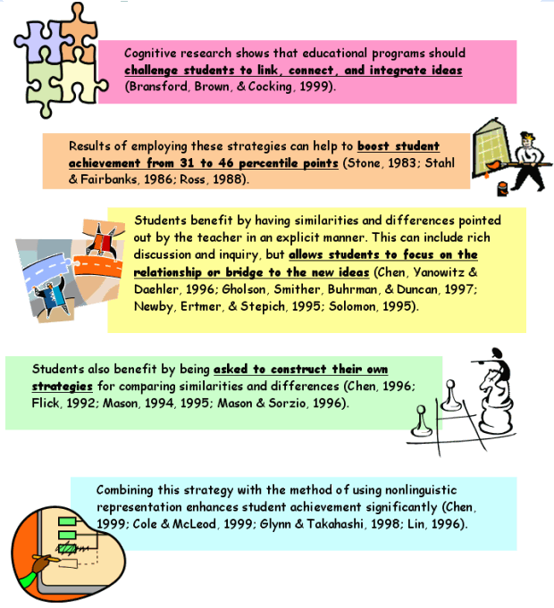
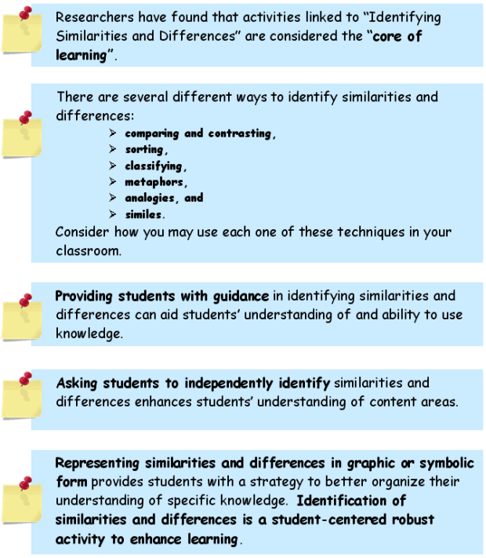

Identifying Similarities and Differences
Objective:
In this module, you will learn about identifying similarities and differences.
*Focus on Effectiveness: Identifying Similarities and Differences
Seeing similarities and differences is a fundamental cognitive process (Gentner & Markman, 1994; Medin, Goldstone, & Markman, 1995). As an instructional strategy, it includes various activities that help learners see patterns and make connections.
For example:
- Students compare things that are similar and contrast things that express differences.
- They classify when they identify features or characteristics of a group of objects or ideas, and then develop a scheme to organize those objects.
- Metaphors are created when two ideas or experiences are compared based on a common underlying structure.
- Finally, analogies provide another way to identify similarities and make comparisons.
Each approach helps the brain process new information, recall it, and learn by overlaying a known pattern onto an unknown one to find similarities and differences. Looking for similarities and differences prompts the learner to consider, "What do I already know that will help me learn this new idea? This fosters relationships and connections to new understanding.
Key Research Findings: Identifying Similarities and Differences

Implementation
Students benefit by direct instruction and open-ended experiences in identifying similarities and differences. Teachers can increase learning potential with research-based strategies, such as:
Point out similarities and differences. Present students with similarities and differences explicitly when this helps them reach a learning goal. As a result of the teacher's instruction, students recognize similarities and differences in order to understand something specific.
Allow students to explore similarities and differences on their own. When the learning goal is to engage students in divergent thinking, ask them to identify similarities and differences on their own.
Have students create graphic organizers. Help students to create or use graphic or symbolic representations of similarities and differences, classification systems, comparisons, and analogies. Suggestions include:
|
Venn diagrams comparison tables or charts, hierarchical taxonomies, linked maps. |
Teach students to recognize the different forms. Help students recognize when they are classifying, comparing, or creating analogies or metaphors.
Recognize that "All the World's a Stage." Language is rich with metaphor. As students encounter metaphors in reading or speaking, generate a class list. Metaphors provide a source of history, generate literary references, and suggest new ways for students to express ideas.
Notes and Activities for Similarities and Differences

Content Focus:
Cultural Diversity and English Language Learners (ELLs)
Before teachers teach, they must be informed about whom they will teach. An informed teacher can make informed decisions about the needs and interests of their students, what they know or need to learn.
First, your students may or may not be like you. They can be from other cultures and speak other languages. Even if you speak Spanish, your student may speak another dialect of language.
So, in order to be an effective teacher, let's learn about cultural differences and understanding second language learners.
Now read the following passages about Understanding Cultural Differences and Understanding Second Language Learners. Focus on how a student's culture can affect classroom behavior, learning, and classroom interaction.
Understanding Cultural Differences
Differences in language and culture are often subtle but affect students' classroom participation in several ways. Understanding these will help you respond in ways that will help both English Language Learners (Ells) and other students to learn.
Cultural differences can mean different rules for classroom behavior:
Students from other cultures can have different views of how to be a student or to "do schooling". For example, though you may want students to participate in class by asking questions and joining in the discussions, some students may not feel comfortable participating because in their culture, it is considered disrespectful to ask questions of the teacher.
Cultural differences can affect students' understanding of content:
New knowledge is built on the basis of what is already known by an individual. For example, in the area of reading, research points out that it is a constructive process that involves building meaning not only from the words on the page, but also from one's related background knowledge. Often, school texts assume a common experience that in fact, is not shared by all students. Ells may not fully understand these texts and consequently, will be less likely to remember the content material. Students whose experience is not in the mainstream, therefore, will often need additional explanation and examples to draw the connection between new material and their existing knowledge bases.
Cultural differences can affect interactions with others:
Culturally different ways of showing interest, respect, appreciation can be misinterpreted. For example, if a student does not look at the teacher when the teacher is speaking, it may be interpreted as the student's lack of attention or as a show of disrespect. However, in the student's culture, the expectation may be just the opposite, that is, to show respect a student should not look directly at the teacher. The way in which praise is given can also be different. For some cultural groups, praise to an individual student is not given publicly. Instead, a quiet word of praise to the student is more appropriate. Teachers need to be sensitive to student reactions and try to respect these, while also helping students to understand the cultural differences. Now watch this video as the class discusses cultural differences.
Understanding Second Language Learners
Research has shown that many commonly held "folklore" beliefs about children and language learning are in fact, inaccurate. The following points about second language learning should be helpful for a teacher in understanding more about ELL student's efforts to learn English.
|
It is not simple or easy for children to learn a second language: Learning a second language is a big task for anyone. After all, while learning a first language is a process that involves much of a young child's day, Ells must work even harder to acquire a second language. For children as for adults, it can be difficult emotionally to take the step into a new language and culture. Children, perhaps even more than adults, can be shy and embarrassed around others when trying out beginning language skills. |
|
 Young children need time to learn a new language: Young children need time to learn a new language:Despite the common view that children have special abilities for learning language, research shows that in fact, older children and adults have the ability to learn the vocabulary and grammar of a new language faster than younger children. This is because older children and adults have already developed learning strategies, and through learning their primary language, have formed an explicit understanding of language rules and structures that can help them in learning a second language. Yet, because they appear proficient with smaller vocabulary and simple phrases, and quickly gain native like pronunciation, young children are often perceived to develop second language proficiently and quickly. |
|
|
Fluency on the playground does not necessarily mean proficiency in the classroom: Often we may hear a student conversing easily in English on the playground with other students. This, however, does not mean that they have become fluent in English; although social conversational skills are important, they are not sufficient for classroom based academic learning. Yet, it is easy to overlook the fact that academic language can still be challenging and adversely affect the student's academic performance even though they are fluent in everyday conversations. In fact, a child who is fluent in English on the playground is likely to require four to six years to acquire the level of proficiency needed for successful academic learning. |
|
|
Children learn a second language in different ways: Different patterns in learning a second language (example, error patterns) may also occur based on the learner's first language. For example, a student whose first language does not mark definite and indefinite references may have a hard time acquiring the use of English articles. |
|
|
Silence is sometimes needed: Silence may also occur in extended pauses before a student answers a question. Allow students additional time to collect their thoughts and structure their answer. Moving too quickly to the next student discourages efforts to respond; in contrast, recognizing that the student needs more time to answer lets the student know that you are interested in listening. |
|
|
Errors can indicate progress: As with first language acquisition, errors can actually have a positive meaning. They often appear when a learner is trying out new grammatical structures. When the focus is on communicating, direct correction of errors can hinder student's efforts and discourage further attempts to express ideas with the language skills they have available. Rather than correct errors directly, a teacher can continue the dialogue by restating what the student has said to model the correct form. |

Now Complete Activity 3 Summary Page
Watch this video and compare class discussion to your Summary Page
In order to complete the Classification Organizer, you will need to reference your Activity 3 reading assignment to look for specific strategies.

Add this Classification Organizer and the Activity 3 Summary Page to your Framework Notebook.